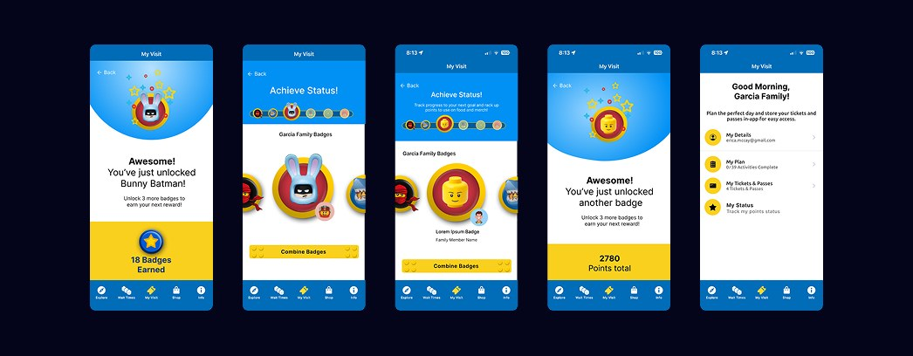
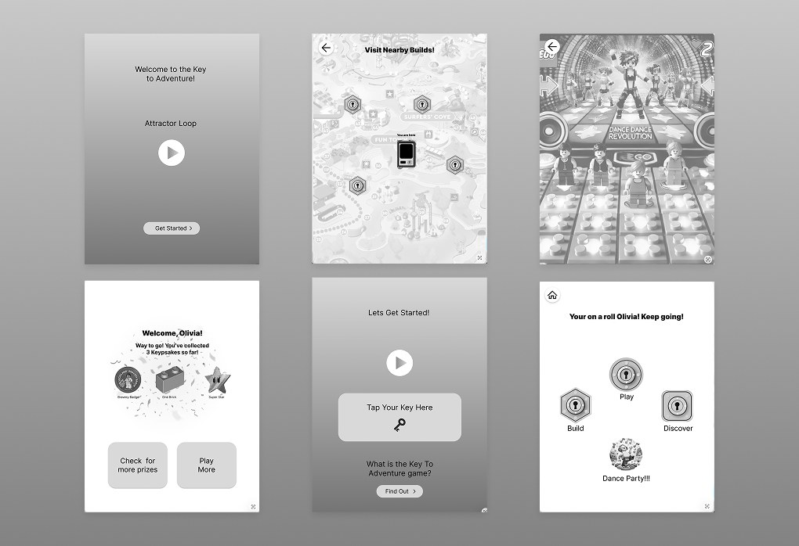
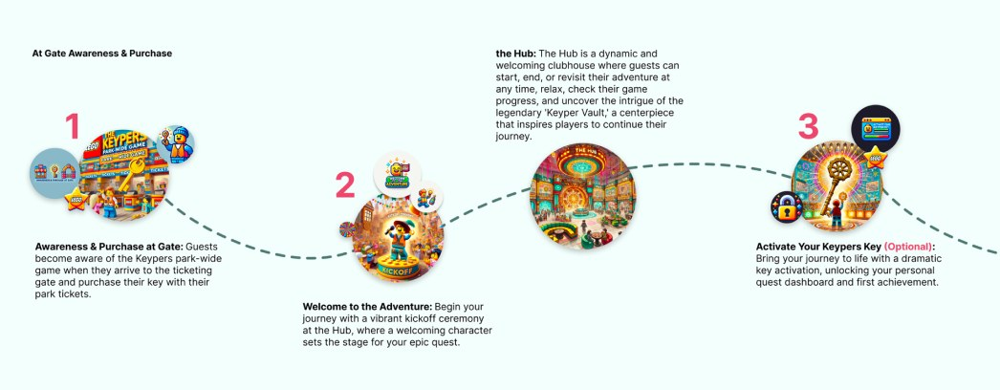

Case study · Themed entertainment
Creating a hidden
digital world inside
the physical park.
What if technology could make a theme park more interactive without putting another screen in front of a kid? I helped create a park-wide game and connected experience that added an invisible digital layer across LEGOLAND California, letting kids discover experiences, unlock activities, play games, build things, compete, and track their progress using their own physical Key to the Kingdom.

The challenge
Make the park more digital without making the experience about devices.
Theme parks are already interactive environments. Kids run, explore, build, ride, discover, and play. The opportunity wasn’t to replace those behaviors with an app. It was to use technology to make the physical world around them respond in new ways.
We began exploring an experience families could opt into. To everyone else, the park would look the same. But once you had the key, there was another world hiding underneath it.
Immersion
You can’t design the park experience from a conference room.
We began with an intensive three-day workshop at LEGOLAND California with the Merlin Entertainments team. We walked the park, experienced attractions, studied how families moved through the environment, and looked at where kids naturally stopped, played, explored, and became curious.
We also spent time understanding the LEGO brand ethos. LEGO isn’t about watching. It’s about doing.
- Build something.
- Try something.
- Break something.
- Rebuild it.
- Use your imagination.
That became an important principle for the experience we were creating.
The big idea
A hidden layer of LEGOLAND, unlocked by a Key to the Kingdom.
Once activated, kids received their own physical key. It became their connection to the hidden world. Using RFID, it could recognize the child as they moved through participating experiences across the park.
Their activity could follow them from one experience to another. The park remembered what they had done.
- Discover hidden interactions
- Activate experiences
- Play physical games
- Build things
- Compete in challenges
- Earn achievements
- Record scores
- Unlock new experiences
- Appear on leaderboards
- Build a history of their adventure

The governing principle
No kid-facing screen time.
We didn’t want children walking through LEGOLAND staring at phones. The digital layer needed to make the physical park more interesting, not compete with it. The RFID keepsake became the interface.
- Tap. Unlock. Build.
- Race. Explore. Discover.
The technology could quietly recognize the child, record the interaction, and connect their experiences together. But from the child’s perspective, something much simpler was happening: the park knew who they were.
My focus · The Hidden Journey
Designing an experience across an entire theme park.
Rather than designing individual attractions independently, I mapped the end-to-end experience of a family participating in this hidden layer of LEGOLAND.
The journey gave us a blueprint for where the digital layer intersected with the physical park.
- Where an experience should appear
- What the child would encounter
- What they could do there
- How the Key would interact with it
- What information would be captured
- What would be unlocked
- How one experience could connect to another
- What parents needed to know
- How progress continued throughout the day
Designing for two audiences
Kids play. Parents orchestrate.
There were really two experiences happening simultaneously.
For kids
- The physical park was the interface
- The Key to the Kingdom let them participate
- No app to manage, no menus to navigate
For parents
- Understand the experience and find participating locations
- Track progress, achievements, and what remains
- Help navigate toward the next experience
Explore → Discover → Play → Unlock → Keep going
The phone became useful to the parent without becoming the center of the child’s experience.
Designing the experiences
Every stop needed to be worth discovering.
Once the Hidden Journey established where experiences could exist, we began defining what actually happened at each location. Each feature needed to work individually while also contributing to the larger park-wide adventure.
That meant every physical experience became part of a connected system.
Ferrari
Build it. Race it. Own the result.
One of the experiences we developed centered around Ferrari. Kids could create their own custom LEGO race car and then put their creation to the test.
Build your car → Connect your Key → Race → Record your result → See the leaderboard
The physical activity remained the hero. The child was still building with LEGO, still racing, still competing. But the digital layer gave that physical moment memory. The result could become part of the child’s larger LEGOLAND adventure.

The park remembers you
Turn individual attractions into one continuous adventure.
Normally, a theme park experience resets constantly. You ride something, it’s over. You play something, it’s over. You move to the next attraction. The Key to the Kingdom created continuity, and the park could begin remembering.
- You built this.
- You raced here.
- You scored this.
- You discovered this.
- You haven’t found this yet.
Suddenly, individual experiences could become chapters in a larger adventure.
Physical + digital
Technology should make the real world feel more magical.
There was significant technology underneath the experience. But none of those things were the point. The point was what they allowed the physical environment to do.
- A physical object could know who was holding it.
- A LEGO car could become part of a persistent competition.
- A hidden location could become something worth discovering.
- A collection of attractions could become a connected journey.
The best technology in this experience wasn’t asking for attention. It was making LEGOLAND itself feel more alive.
The result
A blueprint for a connected park.
The work produced an end-to-end vision for a new kind of LEGOLAND experience.
Most importantly, we established how those individual ideas could work together as one continuous experience across the park.
- Workshop
- Immersion
- Journey
- Concept
- Experience
- Connected park
The bigger idea
The best digital experience might not have a screen.
We were designing a deeply digital experience. But we weren’t trying to make kids spend more time with technology. We were using technology to encourage them to interact more deeply with the park, LEGO, their family, other kids, and their imagination.
The Key to the Kingdom became a bridge between those worlds. Kids didn’t need to understand RFID, connected systems, identity, or data. They just needed to understand three things.
- This is my key.
- There are things hidden throughout this park.
- And I can unlock them.
That’s when technology stops feeling like technology. It starts feeling like magic.